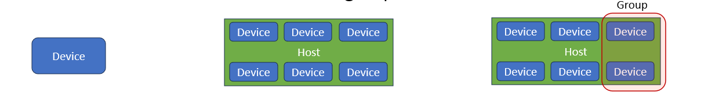

Feature overview¶
Metrics Retrieval¶
AICM continuously polls connected AIC100 devices and caches the latest data. Four categories of metrics are available:
Category |
Description |
REST path prefix |
|---|---|---|
Health data |
General device state, temperatures, power, NSP, DDR, resources. |
|
PCIe data |
PCIe bytes received / transmitted per device. |
|
DDR bandwidth |
DDR byte counts per NSP. |
|
RAS errors |
Correctable and uncorrectable error counts across DDR, MCW, IMEM, NSP. |
|
Each category has three variants:
All devices:
GET /aicm/health_data/Single device:
GET /aicm/health_data/device-{dev_id}Group:
GET /aicm/health_data/group-{group_id}
The same pattern applies to pci_data, ddr_bw_data, and ras_errors.
List Connected Devices¶
To see which device IDs are recognised by AICM:
GET /aicm/device_list
# Response: {"total_devices": 2, "device_ids": [0, 1]}
Collection Intervals¶
Polling intervals are configurable per metric category. The --collection
flag or the collection config key accepts KEY=VALUE pairs in
milliseconds:
python aicm_agent.py --collection HEALTH=500 PCI=2000 DDR_BW=1000 RAS_ECC_ERROR=10000
Minimum intervals enforced by AICM:
Collection |
Default (ms) |
Minimum (ms) |
|---|---|---|
|
1 000 |
500 |
|
1 000 |
1 000 |
|
1 000 |
1 000 |
|
10 000 |
5 000 |
Prometheus Export¶
AICM can serve metrics in Prometheus text format:
Health + PCIe:
GET /aicm/health_data/prometheus_health_metricsRAS errors:
GET /aicm/health_data/prometheus_ras_metrics
See Create graphs and dashboards for Prometheus scrape configuration.
Device Groups¶

Groups are logical collections of device IDs that can be targeted as a unit in metric queries, policies, and diagnostic checks.
Key properties:
Group IDs are user-defined strings. They must not start with a digit (to distinguish them from numeric device IDs).
Groups are host-local — they cannot span multiple hosts.
There is no validation against physical devices. Devices that are not reachable return
device_reachable=falsein the response; reachable devices returndevice_reachable=true.
Group management API (/aicm/group_manager/):
Operation |
Endpoint |
|---|---|
Create group |
|
Delete group |
|
List all groups |
|
List devices in group |
|
Add device(s) to group |
|
Remove device(s) from group |
|
Remove all devices from group |
|
Policies and Alerts¶
Policies monitor a metric over a rolling time window and fire an alert when a threshold condition is met.
Supported Conditions¶
Condition ID |
Monitored metric |
Data model |
|---|---|---|
|
|
Health |
|
|
Health |
|
|
Health |
Supported Actions¶
Action |
Behaviour |
|---|---|
|
Pushes a JSON event to all subscribed SSE clients. |
Policy Evaluation Parameters¶
Parameter |
Description |
Valid values |
|---|---|---|
|
Rolling time window (seconds) over which samples are aggregated. |
|
|
Function applied to samples in the window. |
|
|
How the aggregated value is compared to the threshold. |
|
|
Numeric threshold value. |
Any float |
Creating a Policy via REST¶
POST /aicm/policy/
Content-Type: application/json
{
"id": "temp_alert_dev0",
"condition_id": "temperature_violation",
"action_id": "alert",
"items": [0],
"evaluation_parameters": {
"duration": 60,
"aggregation_type": "avg",
"comparison_operator": "greater",
"threshold": 85.0
}
}
items may contain device IDs (integers) and group IDs (strings) in the
same list.
Policy API operations:
GET /aicm/policy/— list all policiesPOST /aicm/policy/— create a policyPUT /aicm/policy/— update a policyDELETE /aicm/policy/?policy_id=<id>— delete a policy
Subscribing to Policy Alerts¶
Subscribe to the SSE stream to receive alerts in real time:
GET /aicm/sse/policy-alerts
Accept: text/event-stream
Each event is a JSON object:
{
"type": "POLICY",
"policy_id": "temp_alert_dev0",
"device_id": 0,
"value": 87.3,
"alert_time": "2025-06-01T10:32:00.123456"
}
A complete Python example is provided in
examples/policy_alert_subscribe_example.py.
Diagnostics Checks¶
AICM can run on-demand diagnostic suites on individual devices or groups using
the qaic-fdt Field Diagnostics Tool.
For a full step-by-step walkthrough — prerequisites, starting a test, and reading pass/fail — see Running Diagnostic Tests on a Card.
Check Categories¶
Category |
Tests included |
|---|---|
|
Default software checks, PCI checks, device checks, quick inference test. |
|
All quick checks, plus ECC checks and medium inference test. |
|
All medium checks, plus long inference test. |
Creating a Check¶
POST /aicm/checks
Content-Type: application/json
{
"id": "check_dev0",
"category": "quick",
"items": [0]
}
items may contain device IDs (integers) and group IDs (strings).
Retrieving Pending Checks¶
GET /aicm/checks
Subscribing to Diagnostic Report Alerts¶
Results are delivered as SSE events on:
GET /aicm/sse/diagnostics-report
Accept: text/event-stream
A complete Python example is provided in
examples/diag_report_subscribe_example.py.
Note
Special error cases in diagnostic report alerts:
If a card has a problem, the alert reports
User permission error. Run AICM as root for complete device access.If the alert reports
Command not found: /opt/qti-aic/tools/qaic-version-util, grant execute permission:chmod 755 /opt/qti-aic/tools/qaic-version-util.